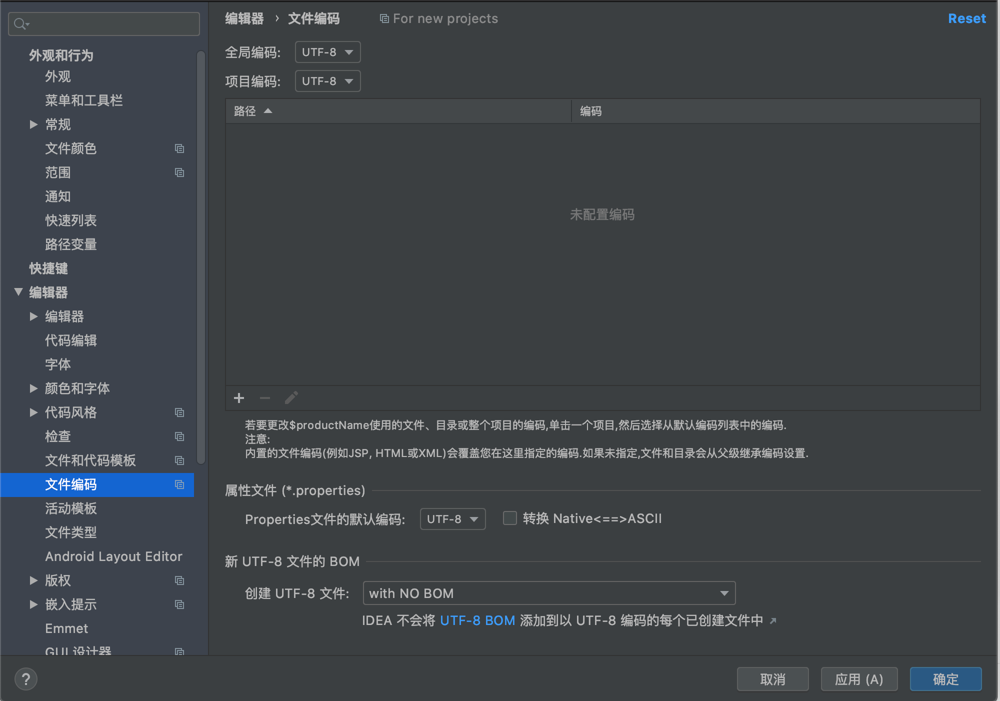
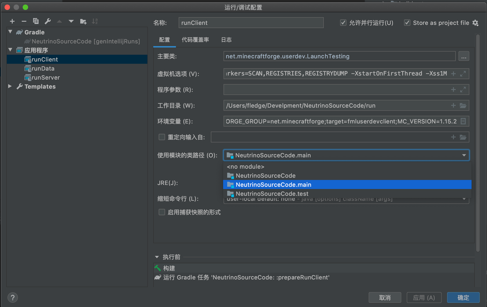

导论
首先欢迎你来到这个教程，既然你会打开这个教程，想必你心中有了开发一个属于自己的mod的念头吧。
正好，这个教程也是为这个目的服务的。但是开发一个属于自己的mod并不是一件容易的事情，你需要学习非常多的知识才能达成这个目标，阅读和跟随这个教程只是非常浅显的部分。
首先我想让你思考一个问题：你需要自己从头开发一个mod吗？
其实对于大部分人的需求，从0开发一个mod并不是必须的。有非常多其他的办法可以达成他们的目标：原版内置的机制，MCcreater和ZenScript等。
如果你的答案是确定的，那么第二个问题：你真的需要亲自写一个mod吗？
Mod开发需要编程和一定的计算机科学的基础，要学好这些并不容易，如果你是一个不会编程的人，或者只是初略的学过编程，我的建议是寻找同伴。美工和设计在Mod开发里都是和写程序是同等重要的。
如果你对上面两个问题的答案都是肯定的，那么我觉得你可以开始阅读这个教程了。在这个教程里，我会假设你有一定的计算机科学常识，熟悉Java编程的基础。
那么如果你现在还不会编程怎么办？没关系，这里有个教程推荐给你：Minecraft mod 开发编程入门
许可证

This work is licensed under a Creative Commons Attribution-NonCommercial-NoDerivatives 4.0 International License.
Forge是什么
本教程是一个基于Forge的Mod开发教程，那么自然而然的要回答一个问题：「Forge是什么？」
乍一看，这个好像根本就不是一个问题，「Forge？Forge不就是Forge吗？」看到这个问题的你内心中的第一个浮现出的想法估计就是这个。
但是回答这个问题还是非常有必要的，接下去我会稍微讲一讲Forge是什么，以及Forge的历史。这些看上去和我们教程无关的内容，其实是Mod开发领域的「乡谣（Lore）」，比如srg名和notch名是什么，mcp又是什么？
首先我们得从Minecraft本身说起，首先我们得明确Minecraft是一个用Java写成的商业软件。这意味着两件事：Minecraft相对于容易被修改，代码本身是不开源而且是被混淆过的。因为长时间的Mojang都没有给Minecraft提供官方API1，所以「Mod Coder Pack」项目诞生了（以下简称为MCP）。
还记得我之前说过的，Minecraft的两个特性吗？MCP就利用的着两个特性，实现了一套工具可以让开发者可以直接修改Minecraft jar包里的内容。
于是 srg 名，notch名和mcp名称诞生了。
那么这三个是什么呢？
首先是notch名，他是Minecraft直接反编译反混淆之后的名称，通常是无意义的字母数字组合。你从名称Notch就可以看出，这个名字是直接来自Minecraft（以及对Notch的怨念），举例来说 j就是一个典型的notch名。
接下来是srg名，这个名字是和notch名是一一对应的，srg名在一个版本里是不会变动的，之所以叫做srg名，是为了纪念MCP项目开发的领导者Searge。在srg名阶段，Minecraft中的类名已经是可读了，变量方法等名称虽然还是不可读，但是有相对应的前缀和尾缀来区分了。以上面的j为例，它的srg名是func_70114_g。
最后是mcp名，这个名称也是我们mod开发中接触最多的名称，在mcp名阶段，代码已经是可读的了。和我们正常写Java程序中的名称没什么两样。但是mcp名是会变动的。举例来说上面的func_70114_g它的mcp名是getCollisionBox。mcp名中的类名和srg名中的类名是相同的。
接下来我们来讲Forge，随着时间的发展，Mod开发者们意识到，直接修改Jar文件写mod的方式太过于粗暴了，而且Mod和Mod之间的兼容性可以说基本没有，Mod开发者们急需一种工具可以方便的开发Mod，而且能保证mod和mod直接的兼容性，于是Forge就诞生了。
Forge其实就是一套通过修改Minecraft方式实现的第三方API，而且随着时间的发展，MCP现在已经死亡了，除了Forge这套API，Fabric也风头正盛，而Forge本身也在Minecraft 1.13版本到来之后经历了一次重写，添加了引入了大量函数式编程的API。
那么我们上面提及的三个名字在Forge中是怎么使用的呢？
在你安装完Forge之后，游戏的运行过程中，所有的内容都会以srg名运行，你编译好的mod同样也会被混淆成srg名，保证它可以正常运行。
API 即 「Application programming interface（应用程序接口）」，是程序的提供的一种机制允许第三方修改或者添加功能。
Minecraft如何运作的
这节的内容非常重要，你必须在自己的大脑中搭建起Minecraft运行的模型图像，不然之后很多概念你会很难理解。
在这一节中，我将介绍一下Minecraft大体上是怎么运作的，以及一个非常重要的概念「端」。
Minecraft大体上属于「C/S架构（客户端/服务端架构）」。那么什么是「服务端」，什么又是「客户端」呢？
从名字上其实就能看出大概的意思，「服务端」是提供服务的，「客户端」是用户直接使用的。那么这两个端在Minecraft中是怎么体现的呢？
在Minecraft中两个端的职责区分如下：
-
服务端
复杂游戏的逻辑，数据的存储和读写。
-
服务端
接受用户的输入输出，通过来自服务端的数据渲染游戏画面。
值得注意的是，这里客户端和服务端的区分是逻辑上的区分。实际上如果你处于单人模式，那么你的电脑上会同时存在服务端和客户端，而且他们处于不同的线程1。但是当你连接某个服务器是，你的电脑上只存在客户端，而服务端被转移到了远程的一台服务器上。
下面一张图大概的解释了Minecraft是怎么运作的。
看到这张图，你可能觉得奇怪，说好的是服务端负责游戏逻辑的呢，为什么客户端也有数据模型？其实这里的「客户端数据模型」只是「服务端数据模型」一个副本，虽然它们都有独立的游戏Tick，也共享很多相同的代码，但是最终逻辑还是以服务端为准。
之前我们提到，客户端和服务端是独立运行的，但是它们不可避免的需要同步数据，而在Minecraft里，所有客户端和服务的的数据同步都是通过网络数据包实现的。在大部分时候原版已经实现了数据同步的方法，我们只需要调用设计好的方法就行，但是在一些情况下，原版没有提供这个功能，或者不适合使用原版提供的功能，我们就得自己创建和发送网络数据包来实现数据的同步。
那么接下去的问题是，我们怎么在代码中区分我们是处于客户端还是服务端呢？
Minecraft的World中有一个isRemote变量，当处于客户端是这个变量值为真，当处于服务端时这个变量值为假。
线程是程序调度的单位之一，处于不同的线程意味着这两个的逻辑和数据是互相独立的，只能通过特定的方法同步数据。具体来说，服务端处于「Server thread」，客户端处于「Render thread」，如果你有观察过Minecraft启动时的输出日志，应该会看到这两个词。
开发模型
在这节中，我们将会粗略的讲一讲Minecraft mod的开发模型是什么样子的，理解这个模型将有助于你理解mod开发中的很多操作是为了什么。
在我看来，Minecraft mod 开发基本上遵循了「事件驱动模式」，这里我们不会详细的讨论纠结什么时「事件驱动模式」你只需要有一个感性的了解即可。
那么在Minecraft「事件驱动模式」是怎么样子的呢？要回答这个问题，我们得先理清三个概念：「事件」「总线」和「事件处理器」。
首先什么是「事件」呢？就跟这个词表示的那样，「事件」就是「发生了某件事」。举例来说「当方块被破环」这个就是一个事件，「当玩家死亡」这个也是一个事件，当然我们前面举的都是非常具体的例子，事件也可以很抽象，比如「当渲染模型时」这个也是一个事件。
接下来什么是「事件处理器」呢？事件处理器就是用来处理「事件」的函数。我们可以创建一个事件处理器来处理「方块破坏事件」，里面的内容是「重新创建一个方块」，可以注册一个事件处理器来处理「玩家死亡事件」，里面的内容是「放置一个墓碑」。
最后是「总线」，总线是连接「事件」和「事件处理器」的工具，当「事件」发生的时候，「事件」的信息将会被发送到总线上，然后总线会选择监听了这个「事件」的「事件处理器」，执行这个事件处理器。

注意这张图里的事件和事件处理器是没有先后顺序的。
在Minecraft中，所写的逻辑基本上都是事件处理。
在Forge开发里有两条总线，Mod总线和Forge总线，所有和初始化相关的事件都是在Mod总线内，其他所有事件都在Forge总线内。
一些核心概念
在这一小节中，我会讲几个不难理解但是非常重要的概念。
注册
如果你想往Minecraft里添加一些内容，那么你必须做的一件事就是注册。注册是一种机制，告诉游戏本身，有哪东西可以使用。你注册时需要的东西基本上可以分成两个部分：一个注册名和一个实例。
ResourceLocation
你可以把ResourceLocation想成一种特殊格式的字符串，它大概长成这样:minecraft:textures/block/stone.png，一个ResouceLocation指定了资源包下的一个特定的文件。举例来说，前面这个这个ResourceLocation代表了原版资源包下的石头的材质图片。ResouceLocation分成两部分，冒号前面的叫做「域（domain）」，在原版中只有一个域即minecraft域，但是如果你开始开发mod，那么每个mod都会有一个或者多个域。冒号的后半部分是和asserts文件夹内的目录结构一一对应的。从某种程度上来说，ResourceLocation就是一个特殊的URL。
模型和材质
在游戏中3d的对象都是基本上都有它的模型，模型和材质组合在一起规定了一个对象具体的样子。模型相当于是骨头，材质相当于是皮肤。在大部分时候，你的材质都是png图片，请注意保证你的材质背景是透明的，其次不要在材质中使用半透明像素，会有不可预知的问题。
环境配置
在这一节中，我们会讲解如何配置Forge的开发环境。（在这一节会劝退大部分人）
Forge开发环境的配置
需要的工具
-
JDK8，出于兼容性的考虑，请确保你安装的是JDK8。
-
IntelliJ IDEA 2020.1 社区版，下载完成后请自行安装，介于目标读者的水平，这里有个如何给2020.1之后版本安装官方中文的教程。
-
Forge MDK 1.15.2 - 31.1.0，下载后请解压到你喜欢的文件夹。
注意，介于预想读者的水平，配置过程十有八九是会失败的，建议直接使用离线包，安装完离线包之后继续按照下述教程进行配置。
总体的介绍
Minecraft Forge是一个Gradle项目，Gradle是一个项目构建工具，其主要作用是负责项目的依赖管理，构建等功能。依赖管理指的是帮你自动的下载配置你开发中使用的库，也就是别人写好的方便你自己开发的代码。构建指的是将你写的的mod打包成别人可以安装的jar文件。
Forge官方写了一个叫做ForgeGradle（以后简称FG）的插件来负责整个mod开发环境的配置（为什么要说这个呢，让你当你环境配置失败时候知道改骂谁)。
IDEA的编码配置（Windows用户专用）
选择Configure下的设置/首选项。
选择编辑器=>文件编码，将右侧所有涉及到编码全部改成UTF-8，并把创建UTF-8文件改成With NO BOM。

开始配置
首先选择启动页面的打开或导入。

选择你MDK解压目录下的build.gradle打开。

选择作为项目打开
打开之后，根据你网络情况和电脑自身的情况，会有或长或短的导入时间，这个过程需要下载很多的依赖包而这些依赖包都存放在海外，介于中国大陆网络封锁策略导致海外网络访问不稳定，这个时间将会持续几分钟至几天不等，而且很有可能失败，对于有代理的同学可以自行搜索「Gradle配置代理」来给Gradle加上代理。
当导入结束，点击下方的build面板，左侧显示绿勾时说明导入成功。
当导入完成后，点击运行右侧的Gradle面板，选择其中的Tasks下fg_runs下的genIntelliJRuns。
在这一步中，会自动下载剩余的一些依赖，以及Minecraft本体和资源文件。出于和上面相同的理由，这个过程耗时会很长，并且非常容易失败。
同样的当左侧显示「绿勾」时说明配置成功。

点击上方的运行=>编辑配置。

选择应用程序下的三项，将其使用模块的类路径改成你文件夹名.main，点击确定保存。

配置完成之后，选择调试。

然后选择RunClient即可启动游戏。
在没有为Gradle配置代理的情况下，runClient有时候会耗费非常多的时间，推荐大家购买并配置代理，或者这个教程也是一种解决办法。
可以看见我们的游戏成功启动了。

如果大家嫌控制台输出太多，可以在虚拟机选项中将-Dforge.logging.console.level=的值改成info。

JDK常见错误
如果你的电脑里有多个JDK，有可能IntelliJ自动选择的JDK是错误的，导致无法导入，你需要手动修改项目的JDK和Gradle运行所需要的JDK。
选择文件下的项目结构。
将项目JDK改成1.8版本
接下去修改gradle的版本，出于一些奇怪的原因，在装了中文插件之后，就无法修改gradle的JDK了，所以首先你得先在设置面板停用中文插件。
然后按照下图，到设置面板，将Gradle VM改成Project JDK

之后再到Plugin下的Installed重新启动中文插件即可。